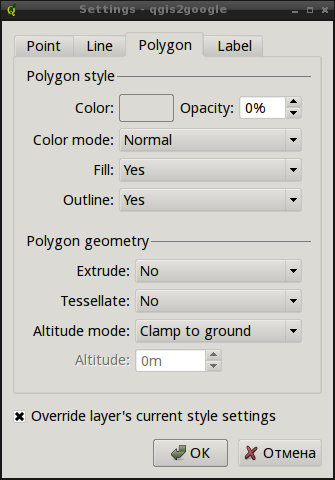
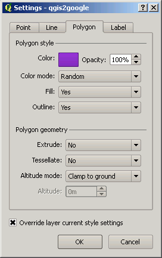

Transfer vector features from QGIS to Google Earth
Instrument description and ways to get it.
1. Introduction
This extensions allow running Google Earth and transfer vector objects from QGIS map canvas. Layers opened in GE are stored in temporary folder and removed after QGIS is closed. Layer symbology can be imported from QGIS layers or set up separately. If attribute table contains populated NAME field, its value is also imported. This tool works only with vector layers.
This extension is tested and working under Windows, QGIS 1.5 and Google Earth 5 and above.
Native data CRS should be Geographic (lat/long), WGS 84 (EPSG: 4326), data can also be in other geographic CRS, but will be treated as 4326. The CRS of the map canvas is not important, if you want you can set the projection to anything you'd like, only native CRS will matter. If after transfering, Google Earth zooms in to the area around 0,0, you need to check native CRS of your data, most probably it is not Geographic, but projected.
"Send feature " tool
This instrument is used to click on the feature of the active layer. The feature being clicked is converted in KML and transfered in GE.
"Send layer " tool

This instrument transfers the whole active layer. Single symbol or unique value symbology can be imported as well as layer transparency.
Settings

Configures alternative symbology used if "Override layer's current style settings" is switched on.

2. Installation and source code
To use the tool under Windows:
- Download qgis2google
- Copy it to QGIS\Plugins, if you installed QGIS with OSGeo4w, use : C:\Gis\OSGeo4W\apps\qgis\plugins
- Turn the plugin on using Plugin Manager (Plugins/Plugin manager )

Source code (C++) is available through SVN.
svn checkout http://svn.gis-lab.info/qgis2google2 qgis2google2
To compile in Linux:
1. Check out plugin's source in QGis plugins directory qgis/src/plugins:
cd qgis/src/plugins svn checkout http://svn.gis-lab.info/qgis2google2 qgis2google2
2. Add name of new plugin's directory in CMakeLists.txt in plugins folder:
cd qgis/src/plugins nano CMakeLists.txt SUBDIRS (qgis2google2)
3. Build QGis as usual:
cd qgis/build ccmake .. make && make install
3. Demo
You can also check out the demo (warning: 100 Mb file).
Sample export of Ecoregions layer from Geosample.